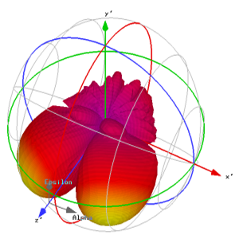
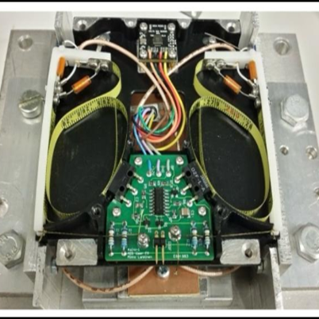
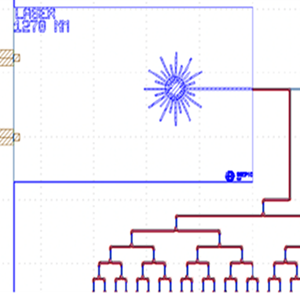
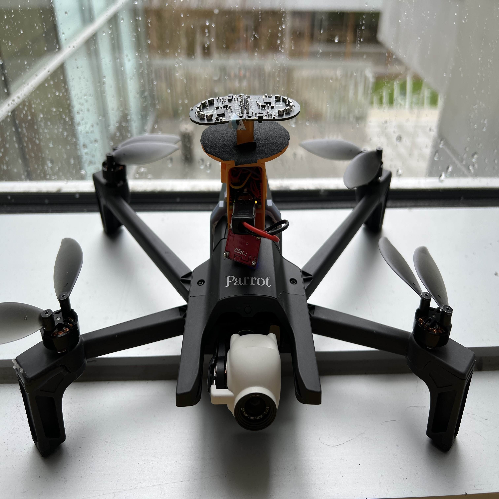
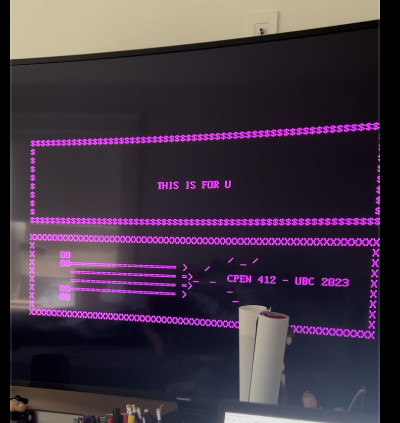
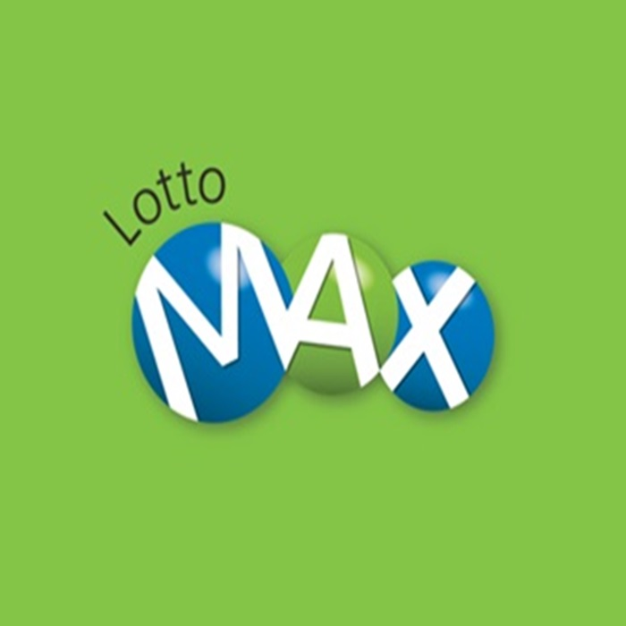
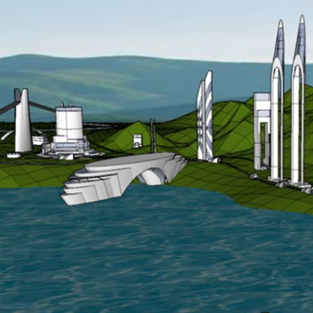

01

Maritime / Huawei Capstone
EMC / EMI Analysis of MPV
Antenna placement and interference analysis for maritime communication systems where HF, VHF, UHF, SATCOM, and Wi-Fi systems share limited physical space.
A curated set of engineering work across hardware, RF, photonics, embedded systems, machine learning, cybersecurity, and design. The emphasis is on systems: what had to work, what I built, and what constraints made it interesting.
Inspired by lab-notebook style portfolios: compact, technical, visual, and honest about the engineering surface area.

Antenna placement and interference analysis for maritime communication systems where HF, VHF, UHF, SATCOM, and Wi-Fi systems share limited physical space.

Satellite communications hardware work spanning RF board integration, antenna deployment reliability, and subsystem-level testing for a CubeSat environment.

A silicon photonics design project focused on optical resonators and layout work, connecting MATLAB analysis with photonic circuit implementation.

Communication and integration work for a responsive AI vlogging drone, with WLAN data flow supporting real-time control and feedback.

A hardware-first game implementation using finite-state-machine design, Verilog, and low-level control logic to make a familiar game run on constrained digital hardware.

A playful pattern-analysis project using neural-network tooling to explore lottery data as a machine-learning experiment, with the right caveat: probability remains probability.
Hands-on security coursework covering incident response, network analysis, SQL, SIEM/SOAR concepts, and investigative workflows with tools such as Wireshark.

Conceptual CAD and spatial design work exploring modular forms, organic architecture, and visual communication of physical ideas.